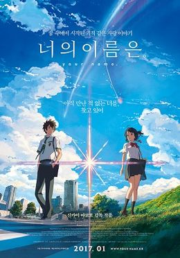

- your name(2016)
- Makoto Shinkai
AniDramaMelo
- 아직 만난 적 없는 너를, 찾고 있어
천년 만에 다가오는 혜성
기적이 시작된다
도쿄에 사는 소년 ‘타키’와 시골에 사는 소녀 ‘미츠하’는
서로의 몸이 뒤바뀌는 신기한 꿈을 꾼다
낯선 가족, 낯선 친구들, 낯선 풍경들...
반복되는 꿈과 흘러가는 시간 속, 마침내 깨닫는다
우리, 서로 뒤바뀐 거야?
절대 만날 리 없는 두 사람
반드시 만나야 하는 운명이 되다
서로에게 남긴 메모를 확인하며
점점 친구가 되어가는 ‘타키’와 ‘미츠하’
언제부턴가 더 이상 몸이 바뀌지 않자
자신들이 특별하게 이어져있었음을 깨달은
‘타키’는 ‘미츠하’를 만나러 가는데...
잊고 싶지 않은 사람
잊으면 안 되는 사람
너의 이름은?